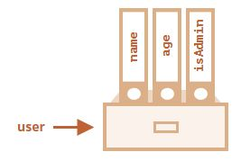

Объекты.
Объекты используются для хранения коллекций различных значений и более сложных сущностей. В JavaScript объекты используются очень часто, это одна из основ языка.
Объект может быть создан с помощью фигурных скобок {…} с необязательным списком свойств. Свойство – это пара «ключ: значение», где ключ – это строка (также называемая «именем свойства»), а значение может быть чем угодно.
Мы можем представить объект в виде ящика с подписанными папками. Каждый элемент данных хранится в своей папке, на которой написан ключ. По ключу папку легко найти, удалить или добавить в неё что-либо.
Пустой объект («пустой ящик») можно создать, используя один из двух вариантов синтаксиса:
let user = new Object(); // синтаксис "конструктор объекта"
let user = {}; // синтаксис "литерал объекта"
Обычно используют вариант с фигурными скобками {...}. Такое объявление называют литералом объекта или литеральной нотацией.
Литералы и свойства
При использовании литерального синтаксиса {...} мы сразу можем поместить в объект несколько свойств в виде пар «ключ: значение»:
let user = { // объект
name: "John", // под ключом "name" хранится значение "John"
age: 30 // под ключом "age" хранится значение 30
};
У каждого свойства есть ключ (также называемый «имя» или «идентификатор»). После имени свойства следует двоеточие ":", и затем указывается значение свойства. Если в объекте несколько свойств, то они перечисляются через запятую.
В объекте user сейчас находятся два свойства:
- Первое свойство с именем
"name"и значением"John". - Второе свойство с именем
"age"и значением30.
Можно сказать, что наш объект user – это ящик с двумя папками, подписанными «name» и «age».

Мы можем в любой момент добавить в него новые папки, удалить папки или прочитать содержимое любой папки.
Для обращения к свойствам используется запись «через точку»:
// получаем свойства объекта:
alert( user.name ); // John
alert( user.age ); // 30
Значение может быть любого типа. Давайте добавим свойство с логическим значением:
user.isAdmin = true;
- 
Для удаления свойства мы можем использовать оператор delete:
delete user.age;

Имя свойства может состоять из нескольких слов, но тогда оно должно быть заключено в кавычки:
let user = {
name: "John",
age: 30,
"likes birds": true // имя свойства из нескольких слов должно быть в кавычках
};

Последнее свойство объекта может заканчиваться запятой:
let user = {
name: "John",
age: 30,
}
Это называется «висячая запятая». Такой подход упрощает добавление, удаление и перемещение свойств, так как все строки объекта становятся одинаковыми.
Объект, объявленный как константа, может быть изменён
Объект, объявленный через const, может быть изменён.
const user = {
name: "John"
};
user.name = "Pete"; // (*)
alert(user.name); // Pete
Может показаться, что строка (*) должна вызвать ошибку, но нет, здесь всё в порядке. Дело в том, что объявление const защищает от изменений только саму переменную user, а не её содержимое.
Определение const выдаст ошибку только если мы присвоим переменной другое значение: user=....
Квадратные скобки
Для свойств, имена которых состоят из нескольких слов, доступ к значению «через точку» не работает:
// это вызовет синтаксическую ошибку
user.likes birds = true
JavaScript видит, что мы обращаемся к свойству user.likes, а затем идёт непонятное слово birds. В итоге синтаксическая ошибка.
Точка требует, чтобы ключ был именован по правилам именования переменных. То есть не имел пробелов, не начинался с цифры и не содержал специальные символы, кроме $ и _.
Для таких случаев существует альтернативный способ доступа к свойствам через квадратные скобки. Такой способ сработает с любым именем свойства:
let user = {};
// присваивание значения свойству
user["likes birds"] = true;
// получение значения свойства
alert(user["likes birds"]); // true
// удаление свойства
delete user["likes birds"];
Сейчас всё в порядке. Обратите внимание, что строка в квадратных скобках заключена в кавычки (подойдёт любой тип кавычек).
Квадратные скобки также позволяют обратиться к свойству, имя которого может быть результатом выражения. Например, имя свойства может храниться в переменной:
let key = "likes birds";
// то же самое, что и user["likes birds"] = true;
user[key] = true;
Здесь переменная key может быть вычислена во время выполнения кода или зависеть от пользовательского ввода. После этого мы используем её для доступа к свойству. Это даёт нам большую гибкость.
let user = {
name: "John",
age: 30
};
let key = prompt("Что вы хотите узнать о пользователе?", "name");
// доступ к свойству через переменную
alert( user[key] ); // John (если ввели "name")
Запись «через точку» такого не позволяет:
let user = {
name: "John",
age: 30
};
let key = "name";
alert( user.key ); // undefined
Вычисляемые свойства
Мы можем использовать квадратные скобки в литеральной нотации для создания вычисляемого свойства.
let fruit = prompt("Какой фрукт купить?", "apple");
let bag = {
[fruit]: 5, // имя свойства будет взято из переменной fruit
};
alert( bag.apple ); // 5, если fruit="apple"
Смысл вычисляемого свойства прост: запись [fruit] означает, что имя свойства необходимо взять из переменной fruit.
И если посетитель введёт слово "apple", то в объекте bag теперь будет лежать свойство {apple: 5}.
По сути, пример выше работает так же, как и следующий пример:
let fruit = prompt("Какой фрукт купить?", "apple");
let bag = {};
// имя свойства будет взято из переменной fruit
bag[fruit] = 5;
…Но первый пример выглядит лаконичнее.
Мы можем использовать и более сложные выражения в квадратных скобках:
let fruit = 'apple';
let bag = {
[fruit + 'Computers']: 5 // bag.appleComputers = 5
};
Квадратные скобки дают намного больше возможностей, чем запись через точку. Они позволяют использовать любые имена свойств и переменные, хотя и требуют более громоздких конструкций кода.
Подведём итог: в большинстве случаев, когда имена свойств известны и просты, используется запись через точку. Если же нам нужно что-то более сложное, то мы используем квадратные скобки.
Свойство из переменной
В реальном коде часто нам необходимо использовать существующие переменные как значения для свойств с тем же именем.
function makeUser(name, age) {
return {
name: name,
age: age
// ...другие свойства
};
}
let user = makeUser("John", 30);
alert(user.name); // John
В примере выше название свойств name и age совпадают с названиями переменных, которые мы подставляем в качестве значений этих свойств. Такой подход настолько распространён, что существуют специальные короткие свойства для упрощения этой записи.
Вместо name:name мы можем написать просто name:
function makeUser(name, age) {
return {
name, // то же самое, что и name: name
age // то же самое, что и age: age
// ...
};
}
Мы можем использовать как обычные свойства, так и короткие в одном и том же объекте:
let user = {
name, // тоже самое, что и name:name
age: 30
};
Ограничения на имена свойств
Как мы уже знаем, имя переменной не может совпадать с зарезервированными словами, такими как «for», «let», «return» и т.д.
Но для свойств объекта такого ограничения нет:
// эти имена свойств допустимы
let obj = {
for: 1,
let: 2,
return: 3
};
alert( obj.for + obj.let + obj.return ); // 6
Иными словами, нет никаких ограничений к именам свойств. Они могут быть в виде строк или символов (специальный тип для идентификаторов, который будет рассмотрен позже).
Все другие типы данных будут автоматически преобразованы к строке.
Например, если использовать число 0 в качестве ключа, то оно превратится в строку "0":
let obj = {
0: "Тест" // то же самое что и "0": "Тест"
};
// обе функции alert выведут одно и то же свойство (число 0 преобразуется в строку "0")
alert( obj["0"] ); // Тест
alert( obj[0] ); // Тест (то же свойство)
Есть небольшой подводный камень, связанный со специальным свойством __proto__. Мы не можем установить его в необъектное значение:
let obj = {};
obj.__proto__ = 5; // присвоим число
alert(obj.__proto__); // [object Object], значение - это объект, т.е. не то, что мы ожидали
Как мы видим, присвоение примитивного значения 5 игнорируется.
Проверка существования свойства, оператор in
В отличие от многих других языков, особенность JavaScript-объектов в том, что можно получить доступ к любому свойству. Даже если свойства не существует – ошибки не будет!
При обращении к свойству, которого нет, возвращается undefined. Это позволяет просто проверить существование свойства:
let user = {};
alert( user.noSuchProperty === undefined ); // true означает "свойства нет"
Также существует специальный оператор "in" для проверки существования свойства в объекте.
Синтаксис оператора:
"key" in object
Пример:
let user = { name: "John", age: 30 };
alert( "age" in user ); // true, user.age существует
alert( "blabla" in user ); // false, user.blabla не существует
Обратите внимание, что слева от оператора in должно быть имя свойства. Обычно это строка в кавычках.
Если мы опускаем кавычки, это значит, что мы указываем переменную, в которой находится имя свойства. Например:
let user = { age: 30 };
let key = "age";
alert( key in user ); // true, имя свойства было взято из переменной key
Для чего вообще нужен оператор in? Разве недостаточно сравнения с undefined?
В большинстве случаев прекрасно сработает сравнение с undefined. Но есть особый случай, когда оно не подходит и нужно использовать "in".
Это когда свойство существует, но содержит значение undefined:
let obj = {
test: undefined
};
alert( obj.test ); // выведет undefined, значит свойство не существует?
alert( "test" in obj ); // true, свойство существует!
В примере выше свойство obj.test технически существует в объекте. Оператор in сработал правильно.
Подобные ситуации случаются очень редко, так как undefined обычно явно не присваивается. Для «неизвестных» или «пустых» свойств мы используем значение null.
Цикл "for..in"
Для перебора всех свойств объекта используется цикл for..in. Этот цикл отличается от изученного ранее цикла for(;;).
Синтаксис:
for (key in object) {
// тело цикла выполняется для каждого свойства объекта
}
К примеру, давайте выведем все свойства объекта user:
let user = {
name: "John",
age: 30,
isAdmin: true
};
for (let key in user) {
// ключи
alert( key ); // name, age, isAdmin
// значения ключей
alert( user[key] ); // John, 30, true
}
Обратите внимание, что все конструкции for позволяют нам объявлять переменную внутри цикла, как, например, let key здесь.
Кроме того, мы могли бы использовать другое имя переменной. Например, часто используется вариант "for (let prop in obj)".
Упорядочение свойств объекта
Упорядочены ли свойства объекта? Другими словами, если мы будем в цикле перебирать все свойства объекта, получим ли мы их в том же порядке, в котором мы их добавляли? Можем ли мы на это рассчитывать?
Короткий ответ: свойства упорядочены особым образом: свойства с целочисленными ключами сортируются по возрастанию, остальные располагаются в порядке создания. Разберёмся подробнее.
В качестве примера рассмотрим объект с телефонными кодами:
let codes = {
"49": "Германия",
"41": "Швейцария",
"44": "Великобритания",
// ..,
"1": "США"
};
for (let code in codes) {
alert(code); // 1, 41, 44, 49
}
Если мы делаем сайт для немецкой аудитории, то, вероятно, мы хотим, чтобы код 49 был первым.
Но если мы запустим код, мы увидим совершенно другую картину:
- США (1) идёт первым
- затем Швейцария (41) и так далее.
Телефонные коды идут в порядке возрастания, потому что они являются целыми числами: 1, 41, 44, 49.
Целочисленные свойства? Это что?
Термин «целочисленное свойство» означает строку, которая может быть преобразована в целое число и обратно без изменений.
То есть, "49" – это целочисленное имя свойства, потому что если его преобразовать в целое число, а затем обратно в строку, то оно не изменится. А вот свойства "+49" или "1.2" таковыми не являются:
// Math.trunc - встроенная функция, которая удаляет десятичную часть
alert( String(Math.trunc(Number("49"))) ); // "49", то же самое ⇒ свойство целочисленное
alert( String(Math.trunc(Number("+49"))) ); // "49", не то же самое, что "+49" ⇒ свойство не целочисленное
alert( String(Math.trunc(Number("1.2"))) ); // "1", не то же самое, что "1.2" ⇒ свойство не целочисленное
…С другой стороны, если ключи не целочисленные, то они перебираются в порядке создания, например:
let user = {
name: "John",
surname: "Smith"
};
user.age = 25; // добавим ещё одно свойство
// не целочисленные свойства перечислены в порядке создания
for (let prop in user) {
alert( prop ); // name, surname, age
}
Таким образом, чтобы решить нашу проблему с телефонными кодами, мы можем схитрить, сделав коды не целочисленными свойствами. Добавления знака "+" перед каждым кодом будет достаточно.
Пример:
let codes = {
"+49": "Германия",
"+41": "Швейцария",
"+44": "Великобритания",
// ..,
"+1": "США"
};
for (let code in codes) {
alert( +code ); // 49, 41, 44, 1
}
Итого
Объекты – это ассоциативные массивы с рядом дополнительных возможностей.
Они хранят свойства (пары ключ-значение), где:
- Ключи свойств должны быть строками или символами (обычно строками).
- Значения могут быть любого типа.
Чтобы получить доступ к свойству, мы можем использовать:
- Запись через точку:
obj.property. - Квадратные скобки
obj["property"]. Квадратные скобки позволяют взять ключ из переменной, например,obj[varWithKey].
Дополнительные операторы:
- Удаление свойства:
delete obj.prop. - Проверка существования свойства:
"key" in obj. - Перебор свойств объекта: цикл
for for (let key in obj).
То, что мы изучали в этой главе, называется «простым объектом» («plain object») или просто Object.
В JavaScript есть много других типов объектов:
Arrayдля хранения упорядоченных коллекций данных,Dateдля хранения информации о дате и времени,Errorдля хранения информации об ошибке.- … и так далее.
Иногда люди говорят что-то вроде «тип данных Array» или «тип данных Date», но формально они не являются отдельными типами, а относятся к типу данных Object. Они лишь расширяют его различными способами.